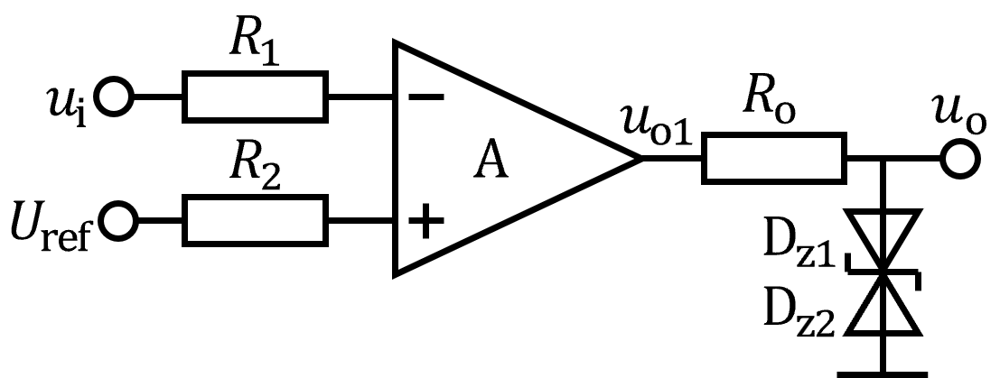
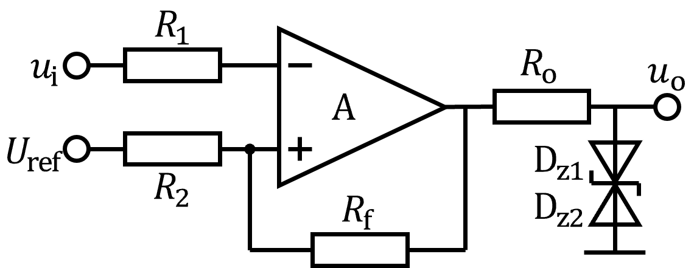
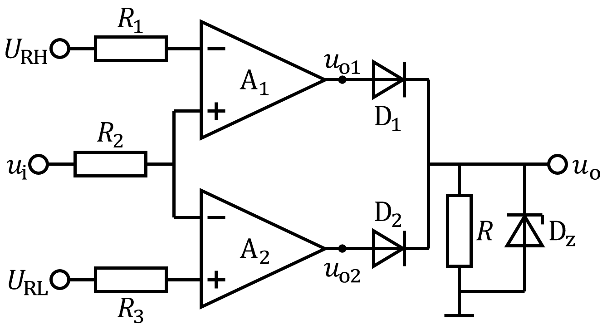

电压比较器
（1）单门限电压比较器：运放处于开环状态，工作在饱和区，只有一个门限电压。

参考电压$U_\mathrm{ref}=3\ (\mathrm{V})$，输入信号$u_\mathrm{i}=4\sin100t \ (\mathrm{V})$，
稳压管导通压降$U_\mathrm{D}=0.7\ (\mathrm{V})$，稳压值$U_\mathrm{Z}=5\ (\mathrm{V})$。
$u_\mathrm{i}/$
$u_\mathrm{o}$
$t$
$O$
$U_\mathrm{ref}$
（2）迟滞比较器：输入电压$u_\mathrm{i}$单调变化时输出电压$u_\mathrm{o}$只跃变一次。

参考电压$U_\mathrm{ref}=3\ (\mathrm{V})$，输入信号$u_\mathrm{i}=4\sin100t \ (\mathrm{V})$，
稳压管导通压降$U_\mathrm{D}=0.7\ (\mathrm{V})$，稳压值$U_\mathrm{Z}=5\ (\mathrm{V})$，
电阻$R_\mathrm{f}=4.4\ (\mathrm{k\Omega})$，$R_2=1\ (\mathrm{k\Omega})$。可求得：
$U_\mathrm{T+}=\frac{R_\mathrm{f}}{R_\mathrm{f}+R_2}U_\mathrm{ref}+\frac{R_2}{R_\mathrm{f}+R_2}(U_\mathrm{D}+U_\mathrm{Z})=3.5\ (\mathrm{V})$
$U_\mathrm{T-}=\frac{R_\mathrm{f}}{R_\mathrm{f}+R_2}U_\mathrm{ref}-\frac{R_2}{R_\mathrm{f}+R_2}(U_\mathrm{D}+U_\mathrm{Z})\approx 1.4\ (\mathrm{V})$
$u_\mathrm{i}/$
$u_\mathrm{o}$
$t$
$O$
$U_\mathrm{T+}$
$U_\mathrm{T-}$
（3）窗口比较器：双门限比较器，输入电压$u_\mathrm{i}$单方向变化时，输出电压$u_\mathrm{o}$跳变两次。

$U_\mathrm{RH}=3.5\ (\mathrm{V})$，$U_\mathrm{RL}=0.5\ (\mathrm{V})$，
输入信号$u_\mathrm{i}=4\sin100t \ (\mathrm{V})$，
稳压管导通压降$U_\mathrm{D}=0.7\ (\mathrm{V})$，稳压值$U_\mathrm{Z}=5\ (\mathrm{V})$。
工作特性：当$U_\mathrm{RL} < u_\mathrm{i} < U_\mathrm{RH}$ 时，输出电压$u_\mathrm{o}=0$；否则输出稳压值$U_\mathrm{Z}$。
$u_\mathrm{i}/$
$u_\mathrm{o}$
$t$
$O$
$U_\mathrm{RH}$
$U_\mathrm{RL}$